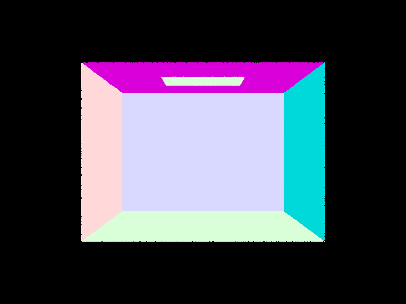
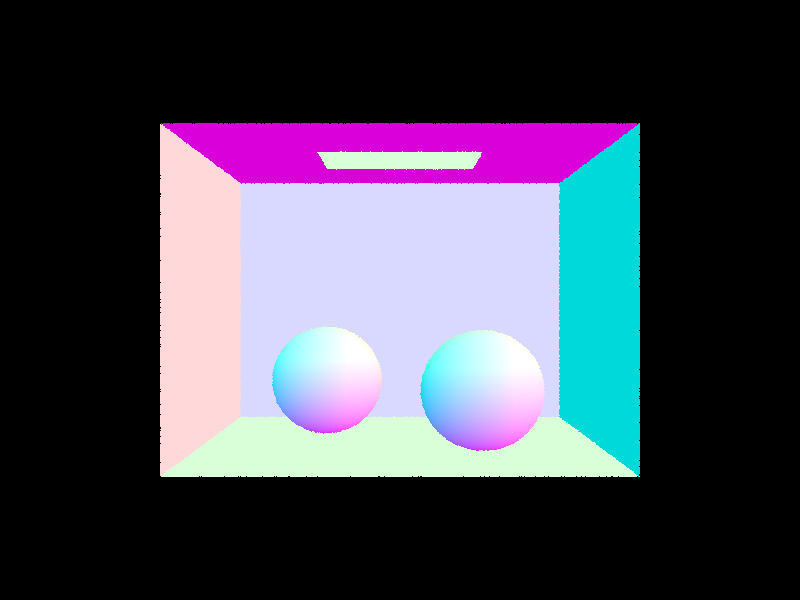
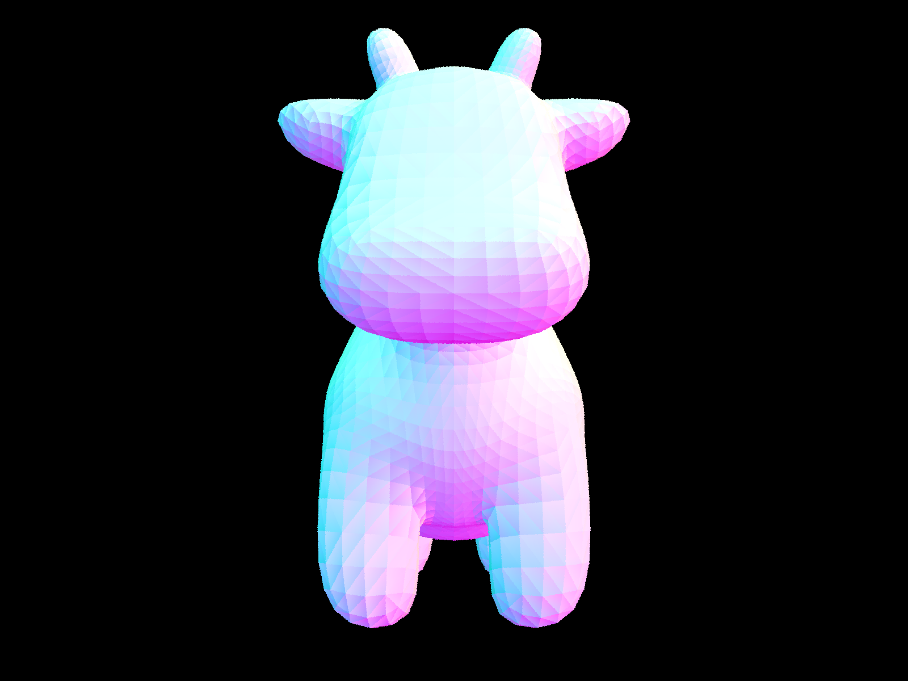
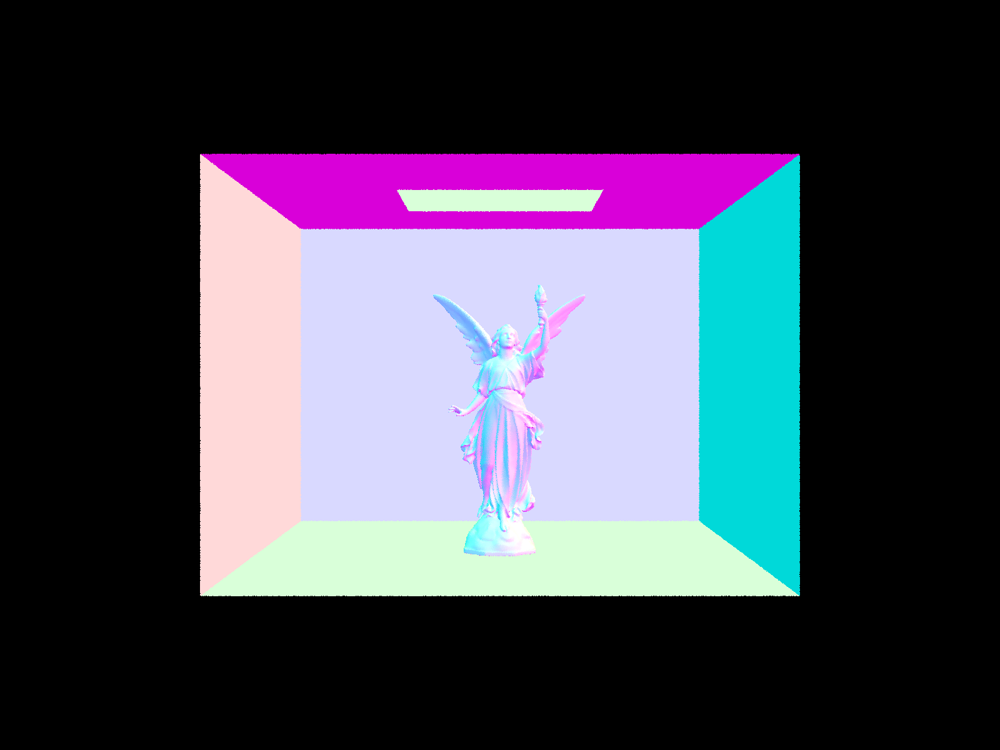
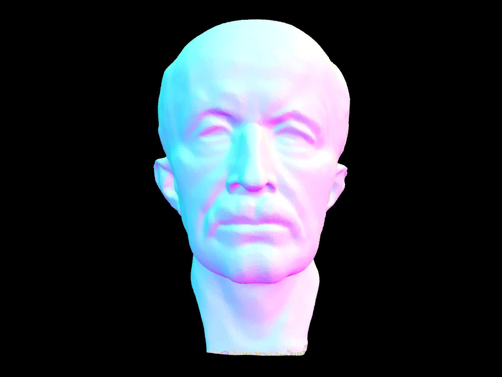

In this assignment, we learned how rays are generate from image space, to camera space, and finally world space. Additionally, we familiarized ourselves with the process of a ray intersecting with a primitive, and how the sort of intersections that occur through every point in our worldspace relates to the final render of an image.
We generate the rays within generate_ray by first, translating our given field of view angles (hFov and vFov) into radians. We then use these numbers to create our x and y sensor positions, which are inputted into our camera space 3D vector. To create our world space 3D vector, we multiply rCamSpace by our camera-to-world rotation matrix. Finally, we generate our ray by using ‘pos’ as our origin, and our world space vector as our direction (as well as setting the ray’s max and min intersection t). In pathtracer, we average the global illumination of each ray given the number of samples to create different color values around 3D objects in our render.
The primitive intersection is implemented by calculating the intersection of a given ray and a primitive with the normal vector of the plane (our primitive) and barycentric coordinates of our triangle vertices—if the intersection is above the min_t and max_t of a ray, or within the viewable bounds, the intersection will be rendered. Otherwise, our intersect function will return false.
We implemented the ray-triangle intersection algorithm by using Moller Trumbore Algorithm: we first calculate the two segments of the triangle, which are cross multiplied by the ray’s direction and the normal vector of the plane, respectively. Then, we can calculate t by dividing 1.0 by the dot products of our cross product results and our segments. If t is less than 0 or min_t, or greater than max_t, it is not visible and shouldn’t be rendered, so Triangle::intersect returns false. Otherwise, we calculate other values relevant to the intersection to render the illumination accurately, including surface normal at the intersection (w/ barycentric coordinates).
|  |  |
In order to construct a BVH, we start by iterating through the primitive objects from the start to the end, creating a bounding box that encompasses all of the individual bounding boxes. If the number of primitives we are given is less than the maximum number of leaves we can have, we create a new leaf node that spans the bounding box we created. Otherwise, we know that we need to split the given primitives into left and right nodes. The heuristic we chose for picking the splitting involves first finding the average of all of the centroids of the primitive nodes, and then assigning primitives to the left or right depending on if their centroid is less than or greater than the average centroid. We then create the left and right child nodes by recursively calling our construct_bvh() method with the split primitives, assign our new nodes left and right pointers to these nodes, and return the new node.
|  |  |  |
For scenes with moderately complex geometries, such as our cow.dae file, rendering times are significantly slower without BVH acceleration. Whereas it might usually take roughly 40 seconds to render without BVH acceleration, the cow.dae file takes less than one second (0.7 seconds) to render. Rather than checking if a ray intersects every existing primitive, BVH acceleration aims to save rendering time by skipping unneeded intersections, and the tree structure enables us to prune nodes as we traverse, thereby further helping to avoid unnecessary calculations.